A better welcome for new sellers: designing onboarding experience
 DESIGN & USER RESEARCH
DESIGN & USER RESEARCH
CHALLENGE
Seller registrations in Southeast Asia (SEA) dropped 3% month-over-month. It wasn't a lack of interest, the onboarding process was simply too frustrating. Only 34% of sellers who started the registration form actually finished it.
STRATEGY
I led the end-to-end redesign of TikTok Shop's seller onboarding across SEA: diagnosing friction across three stages of the journey, facilitating cross-functional workshops, running moderated user testing in the Philippines and Malaysia, and shipping a redesigned flow that made it easier for sellers to start, complete, and recover from rejection.
RESULT
Successfully onboarded sellers grew by +8.85%, sellers who actually start generate GMV increase by +4pp (from 70% to 74%) and satisfaction rate increase to 4.83 on CSAT (+0.28).
CHALLENGE
Nobody quits because selling is hard. They quit because signing up is.
When seller registrations in SEA dropped 3% MoM, it was tempting to blame market conditions. Our audit proved otherwise: the problem wasn't a lack of interest, but a broken onboarding experience.
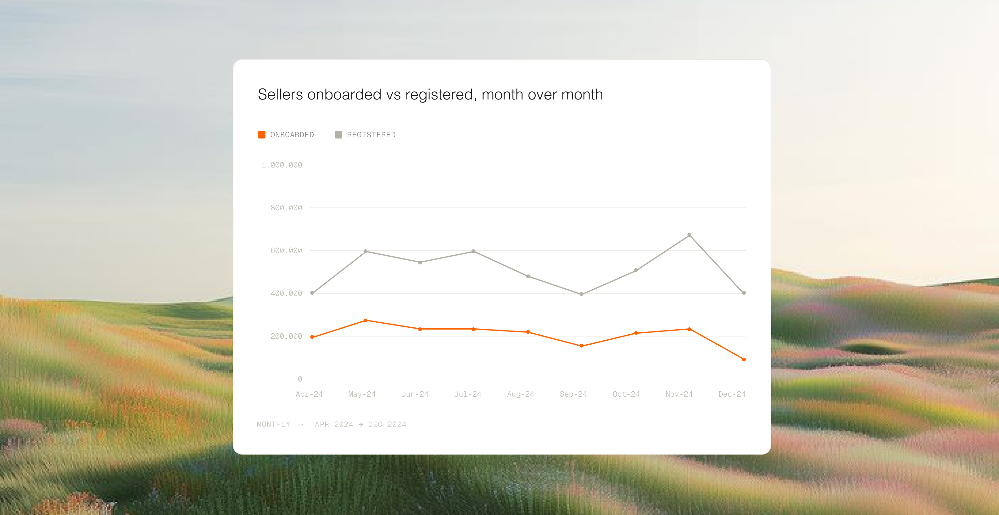
DESIGN STRATEGY
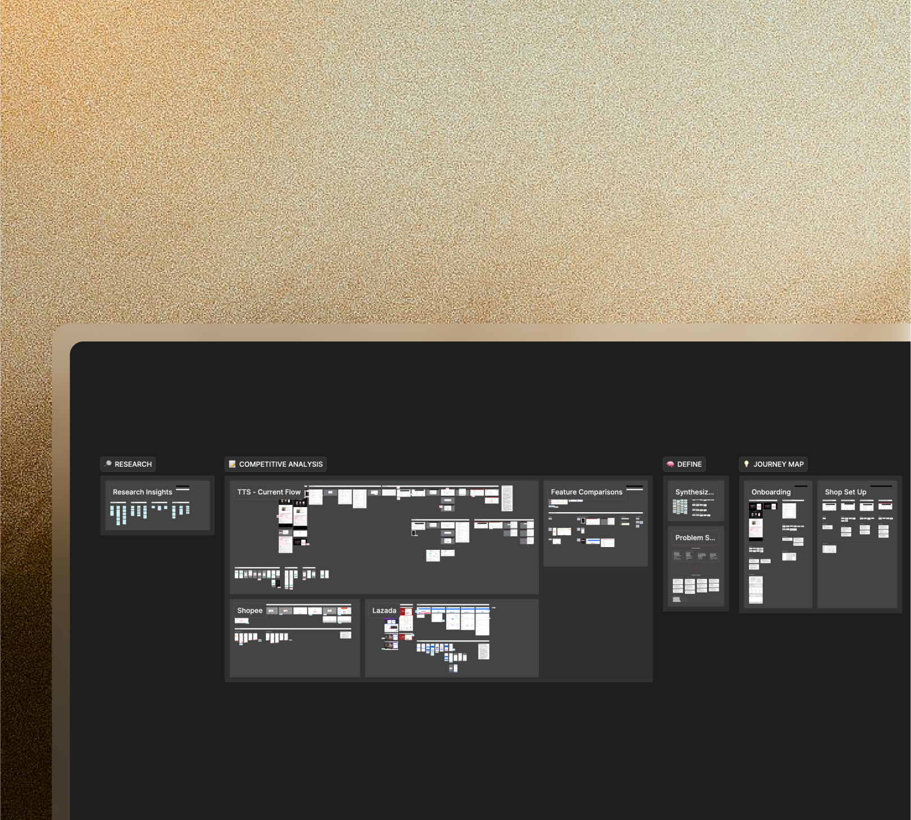
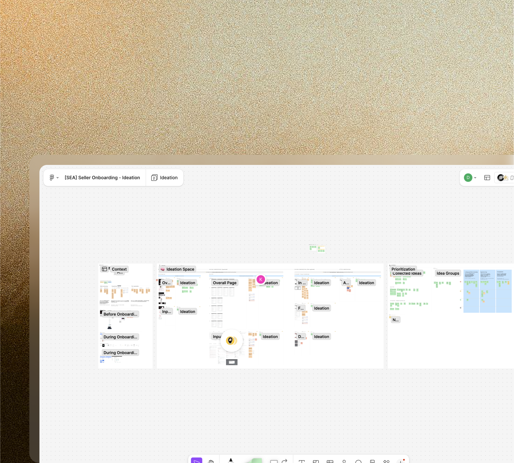
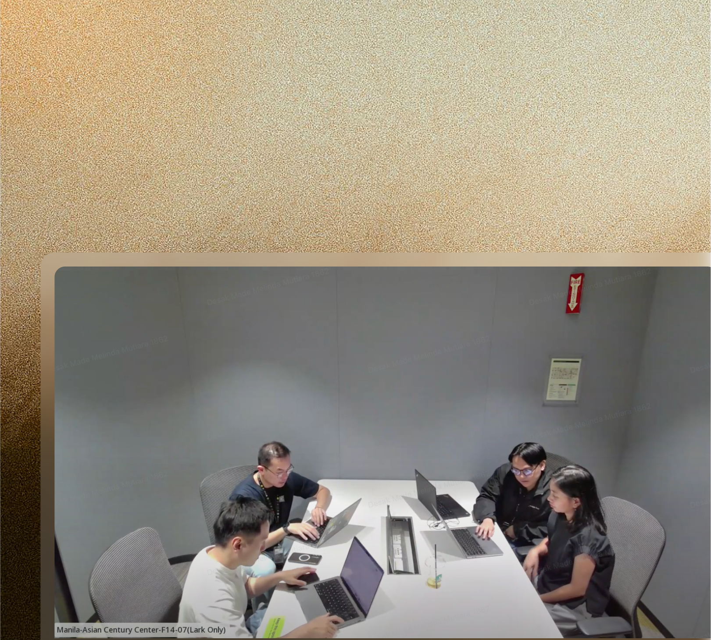
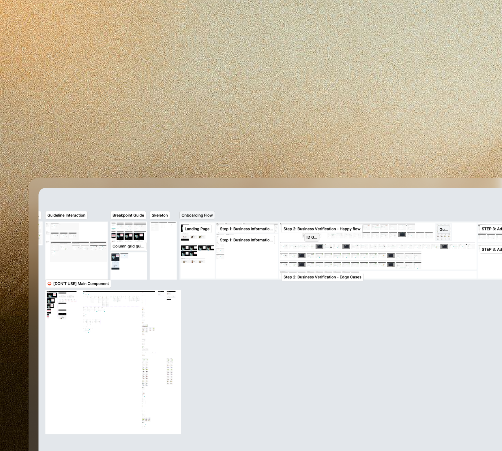
The onboarding funnel: 3 stages of friction.
01.
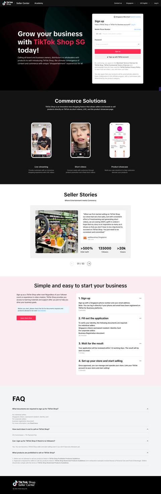
PRE-REGISTRATION
Landing page
02.
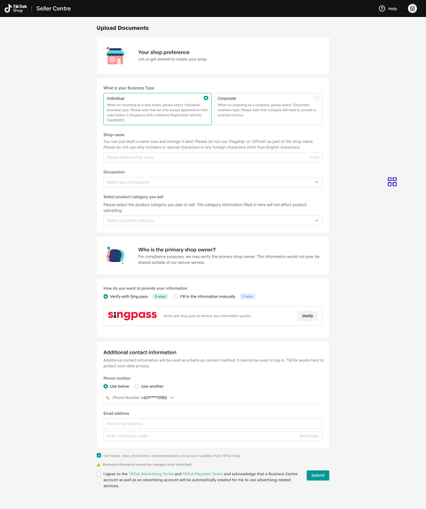
REGISTRATION
Registration form
03.
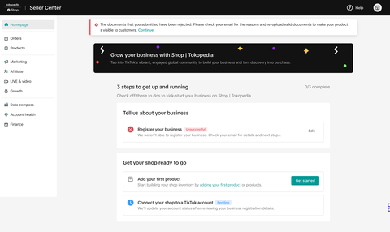
POST-REGISTRATION
Homepage & Registration Page
PRE-REGISTRATION / MAIN ISSUES
Visitors mistake the seller signup for creator signup
They often mistake the seller registration landing page as the entry point to sign up as a content-creator.
Some are not prepared enough for the next step hence drop halfway.
The main reason for not completing registration is missing required documents, as they were not fully prepared before starting the application.
SURVEY INSIGHTS
While most sellers proactively seek information before registration, many still face challenges in understanding the process. Clarity issues, especially the complexity of information and lack of examples for required documents, remain a concern.
PRE-REGISTRATION / SOLUTION
Prepare sellers better before they kick start their business
01.HMW help sellers know this page is for them and feel ready to start so fewer drop off before they begin?
- Help users differentiate between sellers and creator sign up more clearly by improving the copywriting & add visual support to explain this.
- Prepare sellers for the next registration step and motivate them with tailored, localized content.
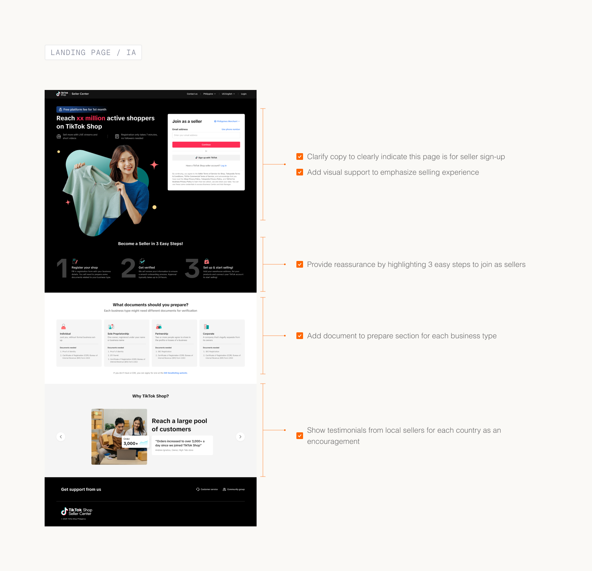
REGISTRATION / MAIN ISSUES
The form felt harder than it actually was
All fields loaded at once with no sense of progress. Sellers perceived the task as overwhelming before filling a single field.
Some are not prepared enough for the next step hence drop halfway.
Instructions for which files to upload weren't connected to the fields they explained. Sellers missed them entirely and guessed instead.
DATA INSIGHTS
66%
Sellers drop halfway in this form as they are not prepared of what to submit.
How might we reduce the perception of complexity in the registration form? 2 different concepts were tested
Step-by-step approach
One section at a time, with a progress bar showing how far along the seller is. Each step is focused and contained but sellers can't see what's coming next.
PROS
"It felt manageable. I didn't feel like I had to do everything at once."
CONS
But sellers still wanted to know what was ahead. The hidden steps created mild anxiety about the unknown.
Long scroll
All sections visible on one page, grouped under clear headers. Sellers can see the full picture before they start and review everything before submitting.
PROS
"I liked being able to check everything before I submitted."
CONS
But the initial view of the full form made several sellers hesitate before they'd even started.
Neither concept was the answer on its own. What sellers actually needed was the focused, one-thing-at-a-time feeling of the stepper combined with the transparency of the scroll.
REGISTRATION / SOLUTION
Combined concept: a scrollable form with progressive disclosure
01.HMW make the registration form feel simple enough that sellers don't get overwhelmed and quit?
- Progressive disclosure: break the form into sections and grey out upcoming ones, so sellers focus on one step at a time.
- Remove unnecessary information or content.
- Group related information under one section, e.g. business type and identity/business verification.
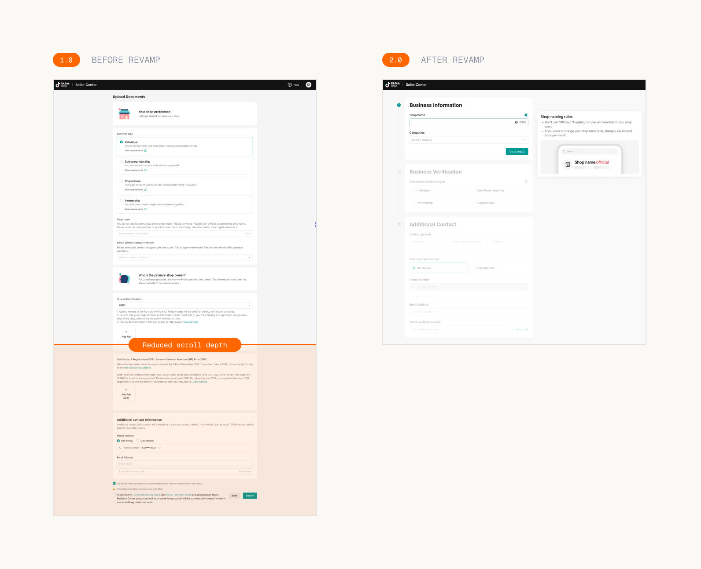
02.HMW provide more detailed guidance to reduce errors and ease cognitive load?
- Guide users on how to upload documents in more detail; e.g. 1 page vs multiple pages.
- Guide users on where to locate the relevant information within their documents.
- Use visual cues to help users better connect the left section and guidance.
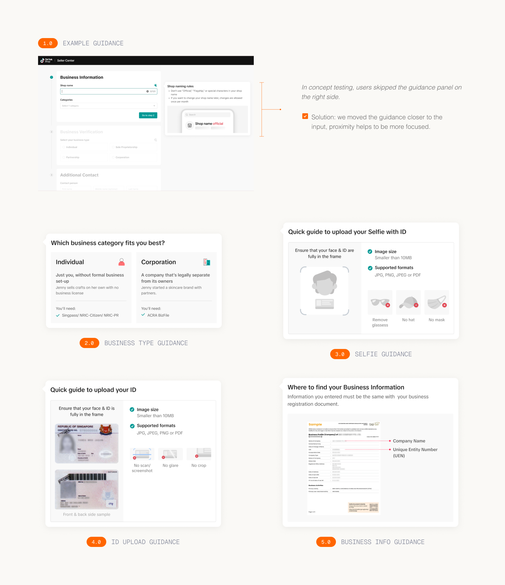
POST-REGISTRATION / MAIN ISSUES
Sellers don't realize they can start setting up their store during review so they wait and do nothing.
This suggests low awareness and a lack of intuitive guidance on what they can do in Seller Center while waiting for the review results.
Submission status was unclear. Rejected sellers had to check their email with no guidance on what to fix.
No in-app rejection reasons, no guidance on how to fix it and avoid another rejection.
SURVEY INSIGHTS
For sellers who experience rejection (18.4%), there are significant clarity issues regarding the reason for rejection and the next steps required. This lack of clarity will potentially make it difficult for sellers to address the issue and successfully reapply.
POST-REGISTRATION / SOLUTION
Entry point: improve information hierarchy along with clear action items
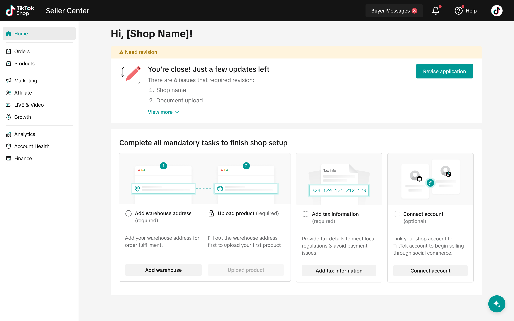
01.Help sellers identify and guide them to resolve issues more seamlessly.
- Give identifier only on fields that need to be fixed.
- Provide rejected reason on each field along with guidance to help sellers resolve it.
- Provide CTA to help users navigate between issues.
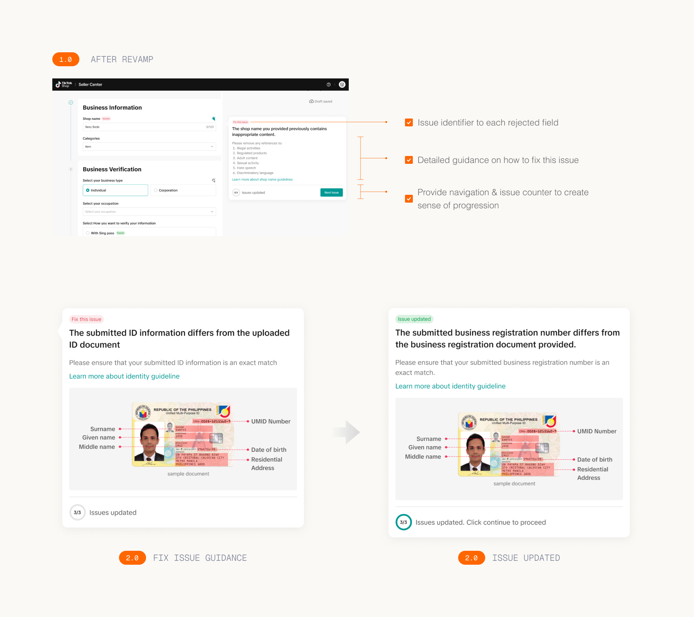